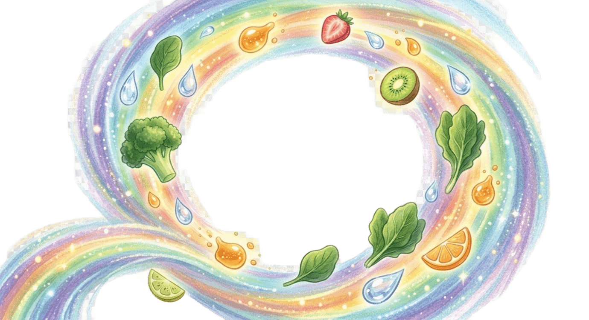

<!DOCTYPE html>
<html lang="zh-TW">
<head>
  <meta charset="UTF-8">
  <meta name="viewport" content="width=device-width, initial-scale=1.0">
  <title>大風吹，吹什麼? 小騎士與餓龍</title>
  <script src="https://cdn.tailwindcss.com"></script>
  <style>
    /* 原本的小動畫保留 */
    .animate-bounce-slow { animation: bounce 2s infinite; }
    .animate-pulse-fast { animation: pulse 1s cubic-bezier(0.4, 0, 0.6, 1) infinite; }
    @keyframes ping-slow {
      75%, 100% { transform: scale(1.5); opacity: 0; }
    }
    .animate-ping-custom { animation: ping-slow 2s cubic-bezier(0, 0, 0.2, 1) infinite; }

    /* 這次新增的旋風魔法動畫 */
    @keyframes spin-grow-fade {
      0% { transform: scale(0.5) rotate(0deg); opacity: 0; }
      20% { opacity: 1; }
      80% { transform: scale(1.2) rotate(360deg); opacity: 1; }
      100% { transform: scale(1.5) rotate(450deg); opacity: 0; }
    }
    .magic-tornado {
      animation: spin-grow-fade 2.5s ease-in-out forwards;
      pointer-events: none; /* 讓旋風不會擋住底下的滑鼠點擊 */
    }
  </style>
</head>
<body id="main-body" class="min-h-screen flex items-center justify-center p-4 transition-colors duration-1000 font-sans bg-amber-100">
  
  <div class="max-w-3xl w-full bg-white/10 backdrop-blur-md rounded-3xl shadow-2xl overflow-hidden border border-white/20" id="app">
  </div>

  <script>
    const scenes = [
      {
        id: 0,
        title: "大風吹，吹什麼? 小騎士與餓龍",
        subtitle: "究竟小騎士面對的是惡龍還是餓龍?",
        content: "<span class='font-bold text-2xl md:text-3xl block mb-4'>大風吹，吹什麼? 小騎士與餓龍</span>究竟小騎士面對的是惡龍還是餓龍? 準備好一起出發了嗎?",
        imageName: "cover.png",
        emojiFallback: "📖🐉🍳",
        bgColor: "bg-amber-100",
        textColor: "text-amber-900",
        isCover: true
      },
      {
        id: 1,
        title: "傳說的開端",
        content: "很久很久以前，國王最心愛的寶貝公主不見了。大家都說，她被一隻可怕的惡龍抓到了遙遠的黑洞穴裡。",
        imageName: "image_13.png",
        emojiFallback: "👑🐉",
        bgColor: "bg-slate-700",
        textColor: "text-white"
      },
      {
        id: 2,
        title: "失敗的騎士們",
        content: "許多騎士想去救公主。有的用尖銳的劍攻擊，惡龍更生氣地反擊。有的用甜點山引誘牠，惡龍吃得很開心，但吃完後卻更空虛，吼叫著要更多。",
        imageName: "image_15.png",
        emojiFallback: "🏰🗡️🍰",
        bgColor: "bg-slate-800",
        textColor: "text-white"
      },
      {
        id: 3,
        title: "惡龍的真相",
        content: "最後沒有人敢靠近了。惡龍獨自坐在洞穴裡，身邊堆滿漂亮的糖果紙。牠的肚子明明很撐，心裡卻覺得好餓好孤單，身體也好難受。",
        imageName: "image_16.png",
        emojiFallback: "🐉🍬🥺",
        bgColor: "bg-indigo-950",
        textColor: "text-slate-300"
      },
      {
        id: 4,
        title: "逆行的小騎士",
        content: "這時出現了一位小騎士。他沒有拿劍，頭上戴著媽媽廚房裡的湯鍋當頭盔，手裡緊緊握著一把木鍋鏟。他默默背對生氣的人群，獨自走進黑漆漆的洞口。",
        imageName: "image_29.png",
        emojiFallback: "🚶‍♂️🛡️🍳",
        bgColor: "bg-indigo-900",
        textColor: "text-slate-200"
      },
      {
        id: 5,
        title: "相遇與理解",
        content: "洞穴裡滿是垃圾食物的包裝。小騎士沒有攻擊，他只是安靜地坐在惡龍面前，看著牠的眼睛，輕輕地問：「你還好嗎？」",
        imageName: "image_5.png",
        emojiFallback: "👀🥺",
        bgColor: "bg-blue-900",
        textColor: "text-blue-100"
      },
      {
        id: 6,
        title: "大風吹魔法：第一回合",
        content: "小騎士舉起木鍋鏟：「大風吹，吹什麼？吹出彩虹能量！」",
        interactive: true,
        magicType: "rainbow",
        magicItems: ["🐟", "🥦", "🍚"],
        buttonText: "揮動木鍋鏟",
        resultContent: "小騎士自己先吃了一大口，笑著說：「有青菜、有肉、有飯，吃完很滿足對吧？」惡龍好奇地、小心翼翼地咬了一小口。卡滋。雖然不甜，但肚子裡那個空空的洞，好像被填滿了一點點。",
        imageName: "image_18.png",
        resultImageName: "image_18_after.png",
        emojiFallback: "✨🍲✨",
        bgColor: "bg-green-800",
        textColor: "text-green-50"
      },
      {
        id: 7,
        title: "痛苦求助",
        content: "沒多久，惡龍又開始痛苦地哼哼。牠的肚子漲得像顆硬石頭，怎麼動都不舒服。牠淚眼汪汪地看著小騎士，好像在說：「幫幫我，好痛。」",
        imageName: "image_9.png",
        emojiFallback: "🐉😭🤰",
        bgColor: "bg-red-900",
        textColor: "text-red-100"
      },
      {
        id: 8,
        title: "大風吹魔法：第二回合",
        content: "小騎士再次舉起木鍋鏟：「大風吹，吹什麼？吹把肚子變不痛的魔法！」",
        interactive: true,
        magicType: "water",
        magicItems: ["🥝", "🥣", "💧"],
        buttonText: "揮動木鍋鏟",
        resultContent: "綠色清涼的風吹來奇異果、燕麥和大量的水！惡龍大口喝下，突然「噗」的一聲，便秘解除了！身體瞬間變得好輕鬆。",
        imageName: "image_magic2.png",
        resultImageName: "image_magic2_after.png",
        emojiFallback: "💨🌊🥝",
        bgColor: "bg-teal-800",
        textColor: "text-teal-50"
      },
      {
        id: 9,
        title: "大風吹魔法：第三回合",
        content: "惡龍的表情變得好柔和，小騎士決定給牠最後的驚喜：「大風吹，吹什麼？吹出大自然的甜寶石！」",
        interactive: true,
        magicType: "sweet",
        magicItems: ["🍯", "🍎", "🥛"],
        buttonText: "揮動木鍋鏟",
        resultContent: "吹來了蜂蜜、新鮮水果和優格。惡龍開心享用，第一次體會到不是來自糖果，而是真正的快樂與滿足。",
        imageName: "image_magic3.png",
        resultImageName: "image_magic3_after.png",
        emojiFallback: "🍯🍓😊",
        bgColor: "bg-amber-700",
        textColor: "text-amber-50"
      },
      {
        id: 10,
        title: "溫柔變身",
        content: "奇妙的事情發生了！在健康的魔法光芒中，惡龍粗糙的鱗片像花瓣一樣慢慢剝落，巨大的身軀溶解在溫暖的光芒裡。",
        imageName: "image_24.png",
        emojiFallback: "✨🐉➡️👸✨",
        bgColor: "bg-pink-800",
        textColor: "text-pink-100"
      },
      {
        id: 11,
        title: "快樂結局",
        content: "惡龍原來是被垃圾食物詛咒的公主！現在她變回金髮、美麗又健康的樣子。小騎士與公主同桌共享著美味均衡的一餐，從此過著健康快樂的日子！",
        imageName: "image_26.png",
        emojiFallback: "👸👦🥗🎉",
        bgColor: "bg-orange-100",
        textColor: "text-orange-900",
        isEnd: true
      }
    ];

    let currentScene = 0;
    let magicCasted = false;
    let isAnimating = false;

    function render() {
      const scene = scenes[currentScene];
      const body = document.getElementById('main-body');
      const app = document.getElementById('app');

      body.className = `min-h-screen flex items-center justify-center p-4 transition-colors duration-1000 font-sans ${scene.bgColor}`;

      let headerHtml = ``;

      let visualHtml = `<div class="relative w-full h-64 md:h-96 bg-black/20 flex items-center justify-center overflow-hidden" id="visual-area">`;
      
      let currentImage = (magicCasted && scene.resultImageName) ? scene.resultImageName : scene.imageName;
      
      // 底層主圖片
      visualHtml += ``;

      // 如果正在動畫中，蓋上旋風魔法圖層
      if (isAnimating && scene.interactive) {
        visualHtml += `
          <div class="absolute inset-0 flex items-center justify-center z-10">
            
          </div>
        `;
        
        // 保留原本飄出的食物 Emoji 當點綴
        let itemsHtml = scene.magicItems.map((item, index) =>
          `<span class="drop-shadow-2xl animate-pulse-fast" style="animation-delay: ${index * 0.2}s">${item}</span>`
        ).join('');
        
        visualHtml += `
          <div class="absolute inset-0 flex items-center justify-center z-20 pointer-events-none">
            <div class="flex gap-4 text-6xl md:text-8xl animate-bounce">
              ${itemsHtml}
            </div>
          </div>
        `;
      }
      visualHtml += `</div>`;

      let contentHtml = `<div class="p-6 md:p-10">`;
      let textClass = `text-xl md:text-2xl leading-relaxed mb-8 ${scene.textColor} ${scene.isCover ? 'text-center font-medium' : ''}`;
      let textContent = magicCasted ? scene.resultContent : scene.content;
      contentHtml += `<p class="${textClass}">${textContent}</p>`;

      if (scene.isCover) {
        contentHtml += `
          <div class="flex justify-center mt-4">
            <button onclick="handleNext()" class="px-8 py-4 bg-amber-500 text-white rounded-full font-bold text-2xl shadow-lg hover:bg-amber-400 transition-all transform hover:scale-105 animate-bounce">
              翻開故事書 📖
            </button>
          </div>
        `;
      } else {
        if (scene.interactive && !magicCasted) {
          contentHtml += `
            <div class="flex justify-center mb-8">
              <button onclick="castMagic()" ${isAnimating ? 'disabled' : ''} class="group relative px-8 py-4 bg-amber-500 hover:bg-amber-400 text-amber-950 font-bold rounded-full text-xl shadow-[0_0_20px_rgba(245,158,11,0.5)] transition-all transform hover:scale-105 active:scale-95 disabled:opacity-50 disabled:cursor-not-allowed">
                <span class="mr-2">🍳</span>
                ${isAnimating ? "魔法施展中..." : scene.buttonText}
                <div class="absolute inset-0 h-full w-full rounded-full border-2 border-white opacity-0 group-hover:animate-ping-custom"></div>
              </button>
            </div>
          `;
        }

        contentHtml += `
          <div class="flex justify-between items-center mt-8 border-t border-white/20 pt-6">
            <button onclick="handlePrev()" class="px-6 py-2 bg-white/20 hover:bg-white/30 text-white rounded-full font-medium transition-colors">
              上一頁
            </button>
            <div class="text-sm ${scene.textColor} opacity-60">
              ${currentScene} / ${scenes.length - 1}
            </div>
        `;

        if ((!scene.interactive || magicCasted) && !scene.isEnd) {
          contentHtml += `
            <button onclick="handleNext()" class="px-6 py-2 bg-white text-slate-900 rounded-full font-bold shadow-lg hover:bg-slate-100 transition-all transform hover:translate-x-1">
              下一頁 ➡️
            </button>
          `;
        }

        if (scene.isEnd) {
          contentHtml += `
            <button onclick="handleRestart()" class="px-6 py-2 bg-green-500 text-white rounded-full font-bold shadow-lg hover:bg-green-400 transition-all">
              回到封面 🔄
            </button>
          `;
        }

        contentHtml += `</div>`;
      }
      contentHtml += `</div>`;

      app.innerHTML = headerHtml + visualHtml + contentHtml;
    }

    function handleImageError() {
      const scene = scenes[currentScene];
      const visualArea = document.getElementById('visual-area');
      
      let fallbackHtml = `<div class="text-7xl md:text-9xl transition-all duration-500 ${isAnimating ? 'scale-90 opacity-20' : 'scale-100 opacity-100'}">${scene.emojiFallback}</div>`;

      if (isAnimating && scene.interactive) {
        let itemsHtml = scene.magicItems.map((item, index) =>
          `<span class="drop-shadow-2xl animate-pulse-fast" style="animation-delay: ${index * 0.2}s">${item}</span>`
        ).join('');
        fallbackHtml += `
          <div class="absolute inset-0 flex items-center justify-center z-20 pointer-events-none">
            <div class="flex gap-4 text-6xl md:text-8xl animate-bounce">
              ${itemsHtml}
            </div>
          </div>
        `;
      }
      
      visualArea.innerHTML = fallbackHtml;
    }

    function handleNext() {
      if (currentScene < scenes.length - 1) {
        currentScene++;
        magicCasted = false;
        isAnimating = false;
        render();
      }
    }

    function handlePrev() {
      if (currentScene > 0) {
        currentScene--;
        magicCasted = false;
        isAnimating = false;
        render();
      }
    }

    function handleRestart() {
      currentScene = 0;
      magicCasted = false;
      isAnimating = false;
      render();
    }

    function castMagic() {
      isAnimating = true;
      render(); 

      // 這次的動畫我拉長到 2.5 秒，讓旋風轉得更有感覺
      setTimeout(() => {
        isAnimating = false;
        magicCasted = true;
        render(); 
      }, 2500);
    }

    render();
  </script>
</body>
</html>
